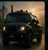
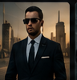
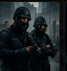
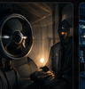

1. Drone Surveillance
Aerial monitoring for sites, events and perimeter observation.
These proposed services form the Part 1 service offering. Each image below is AI-generated content prepared for this academic website concept.
Aerial monitoring for sites, events and perimeter observation.
Security-focused transport planning for clients who require safe and discreet travel arrangements.

Discreet personal security planning and protective support for high-profile and private clients.

Rapid-response security support designed around responsible planning and client safety.

Security planning and monitoring for homes, businesses, venues and controlled sites.

Basic risk identification and recommendations to help clients plan appropriate security measures.